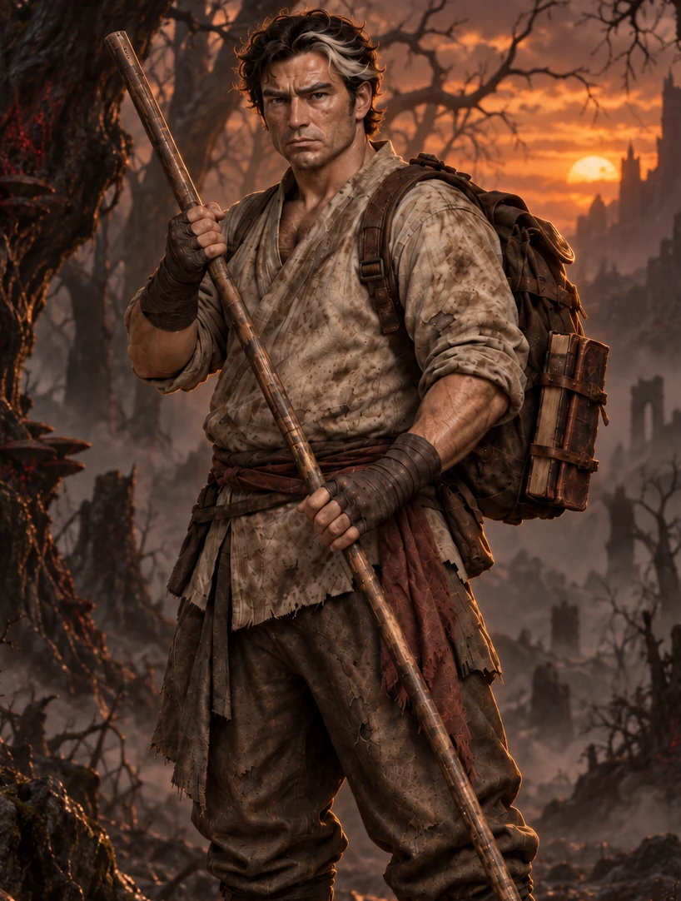

High Stamina
Gain an additional Stress slot at character creation.

Brawler Human Loreborne Level 5
...
Gain an additional Stress slot at character creation.
When you fail a roll that utilized one of your Experiences, you can mark a Stress to reroll.
You have advantage on rolls that involve the history, culture, or politics of a prominent person or place.
Spend 3 Hope to intimidate a target within Close range, making them temporarily Vulnerable.
Your barehanded attacks are as strong as any blade. You have a primary weapon called Brawler's Strike equipped while you have no other Active Weapons. It uses a trait of your choice, has Melee range, and deals d8+d6 physical damage using your Proficiency (both the d8 and d6 scale off your Proficiency). While this weapon is active, you gain a +1 bonus to your Evasion.
After rolling damage on a successful attack with a Melee weapon, you can mark a Stress to start a combo strike. When you do, roll your Combo Die and note the result, then continue rolling your Combo Die until the result of your latest roll is lower than the roll that preceded it. You deal extra damage equal to the total of all rolled Combo Die results on this attack. The results can't be modified by any means.
Your Combo Die starts as a d4. Once per tier, you can increase your Combo Die by one step as a level advancement option.
You can channel your inner resolve to shift into martial stances that grant you special benefits in combat.
Take the Martial Stances sheet and choose two martial stances from Tier 1. Each time you level up your character, choose an additional stance from your tier or lower.
Currently the implementation for this is to simply grab the stances you want from the compendium Subclasses —> Subclass Features —> Martial Stances
When you're targeted by an attack, you can spend a Focus to gain a bonus to your Evasion equal to your tier against the attack.
Spend a Focus to make an Instinct Roll against an adversary within Far range. On a success, deal d20+3 magic damage using your Proficiency.
Once per rest, you can perform an unbelievable feat of athletic prowess, such as running across water, leaping between distant rooftops, or scaling a building without needing to roll. When you do, gain a Hope and clear a Stress.
You can mark a Stress instead of spending a Focus to shift into a different stance. Additionally, you can spend a Focus instead of marking a Stress to start a combo strike.
Gain a bonus to damage rolls equal to a trait of your choice.
On a successful attack, roll a d4. On a result of 4, gain a Focus.
Attack rolls targeting you from within Melee range have disadvantage unless the attacker marks a Stress to negate the disadvantage.
Gain a +2 bonus to your damage thresholds. While in this stance, you can't be moved against your will.
Gain a -1 penalty to your Evasion. On a successful attack, roll an additional damage die and discard the lowest result.
On a successful attack within Melee range, you can spend a Focus or mark a Stress to temporarily Restrain the target or throw the target up to Close range.
When you choose not to equip armor, you have a base Armor Score of 3 + your Strength and use the following as your base damage thresholds:
When an ally within Very Close range would take damage, you can mark a Stress to stand in the way and make yourself the target of the attack instead. When you take damage from this attack, you can mark any number of Armor Slots.
After a long rest, place a number of tokens equal to your Knowledge on this card (minimum 1). The first time you move within Close range of an adversary and make an attack against them, you can spend one token to choose one of the following options:
When you take a long rest, clear all unspent tokens.
When an ally within Close range fails a roll, you can spend 2 Hope to allow them to reroll either their Hope or Fear Die.
Mark a Stress to boost off a willing ally within Close range, fling yourself into the air, and perform an aerial attack against a target within Far range. You have advantage on the attack, add a d10 to the damage roll, and end your move within Melee range of the target.
When you Help an Ally, they can spend a Hope to add one of your Experiences to their roll alongside your advantage die.
When making a Tag Team Roll, you can roll a d20 as your Hope Die.
When observing a creature, you can make an Instinct Roll against them. On a success, spend a Hope and ask the GM for one set of information about the target from the following options:
Additionally on a success, you can mark a Stress to remove a Fear from the GM's Fear Pool.
Handfuls 1
Instinct · Melee · 3d8+6 mag
Eruptive. On a successful attack against a target within Melee range, all other adversaries within Very Close range must succeed on a reaction roll (14) or take half damage.
Instinct · Melee · 3d10+9 phy
Clear 1d4 HP.
This item represents enough rations to feed a character for a few days. So long as a character has this item on them when they travel, they do not suffer from the effects of hunger or thirst. If a character does not have this item on their person during a long rest taken as part of a travel narrative, they may not take the clear stress downtime action. Generally speaking, a character does not need to carry multiple uses of this item. Each item represents multiple servings of foodstuff. After a long rest, however, a GM may spend a Fear in order to force a character to make an Instinct Roll with a difficulty based on the terrain. On a failure, the character runs out of rations and must consume this item.
Where did you spend time during your formative years that taught you, directly or indirectly, how to fight in the style you use?
What organization has vowed to kill you on sight, and what did you do to invoke their ire?
Who did you recently lose a fight to that you're desperate for a rematch against?
What is one thing we're both afraid of?
What do I rely on you for during our travels? How do you feel about it?
I still haven't forgiven you for something you said to me. What was it, and why did you say it?
An unofficial fan site for a private Daggerheart campaign.